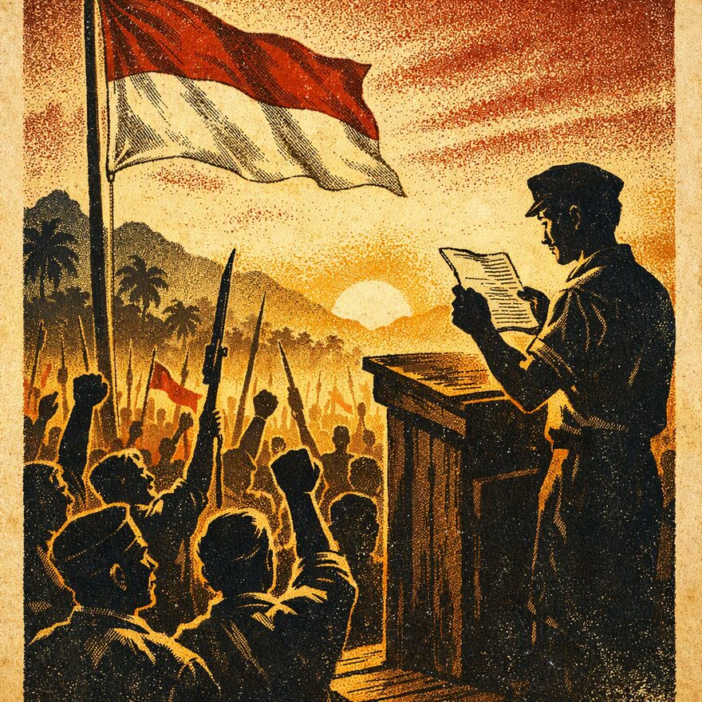
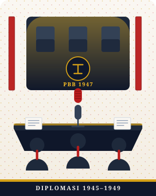
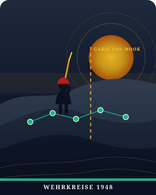

Merdeka dari Hoaks & Agresi Informasi
Tahun 1945–1949, pejuang Republik bertaruh nyawa menghadapi blokade dan propaganda NICA/Belanda. Hari ini di era media sosial, medan pertempuran berpindah ke gawai kita: banjir hoaks, manipulasi data, dan polarisasi. WASPADA membekali pelajar SMA dengan jiwa ksatria dan kecakapan digital pejuang kemerdekaan.

WASPADA Mobile
Radar Aktif
Perisai Siber Kebangsaan
Deteksi Propaganda & Validasi Fakta Kemerdekaan
Kanal penyebar memotong pidato Sutan Sjahrir di PBB untuk mendiskreditkan Republik.
Diplomasi vs Perjuangan Fisik (1945–1949)
Mempertahankan kemerdekaan memerlukan dua sayap: diplomasi catur meja perundingan dan ketegasan fisik di medan perang. Dua metode yang saling menguatkan.
Debat Logika (Diplomasi) & Ketahanan Benteng Data (Fisik)
Linimasa Peristiwa Krusial Kedaulatan RI
Proklamasi
Pernyataan mutlak kemerdekaan bangsa Indonesia ke dunia.
Linggarjati
Diplomasi Sutan Sjahrir. Pengakuan de facto Jawa, Madura, Sumatra.
Agresi Militer I
Belanda melanggar perjanjian; operasi militer serentak dimulai.
Perjanjian Renville
Tekanan PBB di atas kapal USS Renville; penetapan Garis Van Mook.
Agresi Militer II
Yogyakarta jatuh. Pembentukan PDRI di Bukittinggi oleh Sjafruddin.
Roem-Roijen
Pengembalian Pemimpin RI ke Yogya & kesepakatan gencatan senjata.
KMB di Den Haag
Hatta memimpin delegasi menuju penyerahan kedaulatan tanpa syarat.
Pengakuan Kedaulatan
Kedaulatan Indonesia diakui penuh secara internasional.
Perjuangan Bersenjata (Fisik)
TKR, Laskar Rakyat, Bambu Runcing, Serangan Umum 1 Maret
Membuktikan kepada dunia bahwa Republik Indonesia tidak mati; mematahkan klaim propaganda Belanda bahwa RI hanyalah gerombolan liar tanpa tentara.
Korban jiwa sipil dan militer yang sangat besar, logistik dan amunisi terbatas, blokade ekonomi ketat oleh musuh.
Perjuangan Meja Diplomasi
Sjahrir, Moh. Hatta, Agus Salim, Roem, PBB (KTN & UNCI)
Mendapatkan legitimasi hukum internasional, memojokkan agresi musuh di Dewan Keamanan PBB, dan memutus dukungan sekutu bagi penjajah.
Sering kali terpaksa berkompromi wilayah (wilayah RI menyempit pasca-Renville) dan memicu gejolak pro-kontra di kalangan laskar internal.

Dua Sayap, Satu Kedaulatan
Meja perundingan dan medan gerilya bukan dua kubu yang berlawanan — keduanya sayap dari satu tubuh perjuangan. Diplomasi memberi legitimasi, perjuangan fisik memberi buktinya. Nyaris sama dengan literasi data hari ini: kamu butuh argumen yang santun sekaligus bukti yang kuat sebelum membantah hoaks di grup kelas.
Garis Van Mook & Strategi Gerilya
Garis Van Mook adalah batas sepihak buatan Belanda (pasca Agresi Militer I 1947) untuk mengisolasi kantong-kantong Republik. Namun Jenderal Soedirman dan TNI merespons dengan Wehrkreise (kantong gerilya rakyat semesta), menembus kepungan dan membalikkan keadaan.
*Catatan Sejarah: Belanda mengklaim bahwa dengan menguasai kota besar dan jalan raya, RI telah runtuh. Jenderal Soedirman membuktikan kekuasaan sejati ada di hati rakyat pedesaan melalui perang gerilya.
"Echo Chamber" adalah Garis Van Mook Modern!
Di media sosial, algoritma menciptakan dinding polarisasi yang memisahkan kelompok masyarakat. Ini mirip garis Van Mook yang memotong komunikasi Republik.
Tembus Blokade Algoritma
Jangan hanya membaca kabar dari satu lingkaran (echo chamber). Carilah perspektif objektif dan data pembanding independen.
Taktik Sel Gerilya Informasi
Sebarkan klarifikasi hoaks secara desentralisasi dari obrolan keluarga, grup teman sebaya, hingga media sosial pribadi.
Perlindungan Saksi & Sumber Primer
Selalu periksa rujukan utama (arsip resmi, undang-undang, siaran pers otoritas) bukan sekadar tangkapan layar tanpa tanggal.

Konsep Aplikasi & Simulator Cek Fakta WASPADA
Arsitektur sistem deteksi hoaks yang menggabungkan kecerdasan buatan, basis data arsip sejarah nasional, dan simulator mandiri bagi pelajar se-Nusantara.
Cek Fakta Instan
Tempel teks, tautan, atau unggah tangkapan layar. Sistem memindai kecocokan dengan 50+ pangkalan data verifikasi resmi nasional.
Radar Propaganda
Mendeteksi narasi buatan bot, rekayasa sentimen kebencian SARA, dan pola penggiringan opini yang memecah-belah persatuan pemuda.
Mode Siasat
Panduan taktis bagi siswa untuk membalas pesan hoaks di grup obrolan dengan kartu infografis fakta resmi yang ringkas dan santun.
Lapor Hoaks
Kanal pelaporan terdesentralisasi bagi OSIS & pelajar untuk menandai konten manipulatif agar segera ditinjau oleh tim fakta.
Pos Persatuan
Ruang literasi bersama yang memuat ensiklopedia sejarah kemerdekaan RI 1945–1949 yang telah diverifikasi oleh sejarawan profesional.
Detektor Propaganda & Verifikasi Mandiri Siswa
Ketik atau tempel narasi/berita mencurigakan untuk mendeteksi indikasi hoaks, disinformasi, bias emosional, dan kesesuaian fakta sejarah.
Mencocokkan dengan Arsip Sejarah & Pola Hoaks...
Memindai indikator clickbait, bot sentimen, dan validitas fakta
Teks Memiliki Ciri Rekayasa & Manipulasi Disinformasi
Ditemukan pola provokasi emosional, ketiadaan rujukan resmi arsip, dan frasa tipikal hoaks berantai yang sering disebarkan untuk memicu keresahan massa.
Tahan jempol! Jangan sebarkan ke grup WhatsApp kelas atau keluarga. Verifikasi lewat situs resmi Kominfo / TurnBackHoax.id.
Bagaimana WASPADA Menguji Informasi?
Pilih salah satu status di bawah untuk melihat bagaimana antarmuka seluler aplikasi WASPADA menyajikan bukti fakta secara transparan kepada pelajar SMA.
Hasil Analisis WASPADA: Narasi ini adalah disinformasi sejarah. Faktanya, Presiden Soekarno telah memberikan mandat telegram pembentukan Pemerintah Darurat RI (PDRI) kepada Sjafruddin Prawiranegara di Bukittinggi.
5 Nilai Filosofis Pejuang untuk Pelajar Abad 21
Teknologi hanyalah alat; integritas moral dan kecintaan pada tanah air adalah kompas penuntun. Berikut lima nilai keteladanan 1945–1949 yang ditanamkan dalam aplikasi WASPADA.
Siasat Gerilya
Fleksibilitas & Ketangguhan
Menghadapi musuh dengan senjata canggih tidak harus frontal bila belum siap. Pelajar bijak mundur sejenak untuk meneliti kebenaran sebelum membagikan kabar viral.
Sistem Wehrkreise
Pertahanan Berjejaring Rakyat
Setiap sekolah dan kelas membentuk sel mandiri pemeriksa fakta. Tidak bergantung pada satu figur sentral, melainkan gotong-royong seluruh teman sebaya.
Dwi-Tunggal Aksi
Diplomasi Santun + Ketegasan Sikap
Meniru harmoni Sjahrir-Hatta dan Soedirman. Menegur teman yang menyebar hoaks dilakukan dengan etika diplomatis tanpa mencemooh, namun tetap tegas pada kebenaran.
Sumpah Persatuan
Kekebalan dari Polarisasi
Musuh senang memecah-belah dengan politik devide et impera. Generasi muda menolak diprovokasi oleh isu adu-domba suku, agama, dan antar-golongan.
Kenali Medan
Literasi Algoritma & Arsitektur Siber
Pejuang 1945 hapal kontur bukit dan rimba tanah air. Siswa SMA masa kini wajib paham cara kerja algoritma, bot medsos, dan celah keamanan data pribadi.
Perjuanganku lebih mudah karena mengusir penjajah, tapi perjuanganmu akan lebih sulit karena melawan bangsamu sendiri yang terpecah oleh kabar bohong. — Refleksi Pesan Bung Karno
Uji Cerdas Wira Muda SMA
Jawab 5 pertanyaan studi kasus sejarah dan literasi data untuk menguji kesiapanmu menjadi Duta WASPADA. Setiap soal dinilai langsung begitu kamu memilih jawaban.
Apakah tujuan utama Belanda menetapkan "Garis Van Mook" pasca Agresi Militer I 1947?
Sutan Sjahrir dan Bung Hatta mengutamakan meja perundingan (diplomasi) dengan tujuan:
Bila kamu menemukan pesan viral berantai yang provokatif di grup kelas tanpa sumber terpercaya, sikap ksatria adalah:
Pada Agresi Militer Belanda II (Desember 1948), Radio Hilversum menyiarkan propaganda bahwa "Republik Indonesia telah musnah dan pemimpinnya menyerah". Sikap kritis pejuang siber adalah:
Mengapa strategi Wehrkreise Jenderal Soedirman dianggap mampu mematahkan klaim kemenangan Belanda?
Kuis Selesai!
Menjadi Bagian dari Pasukan Sadar Data
"Kami pelajar Indonesia bersumpah: senantiasa meneliti sebelum meyakini, menjaga persatuan di atas perbedaan opini, dan meneruskan nyala juang para pahlawan kemerdekaan 1945–1949 di jagat maya."